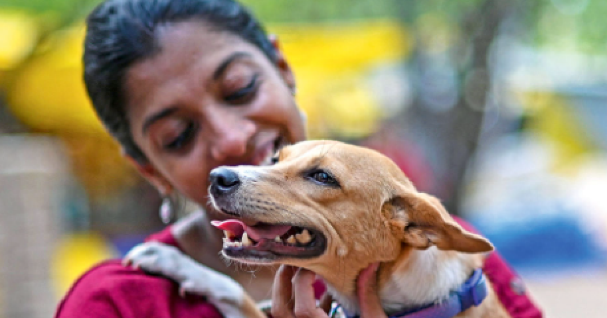
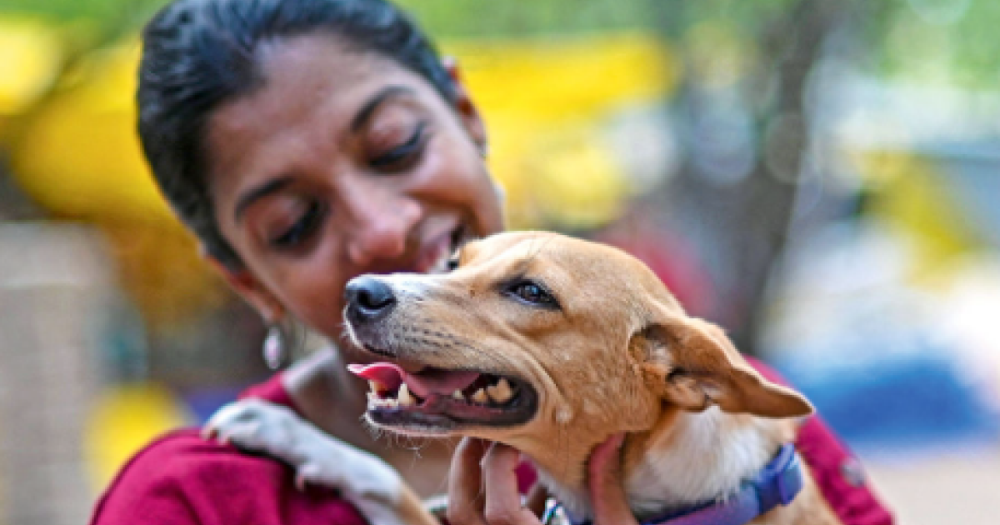

EK BACHA APKA
Meet Sessions
Organize interactive meet-and-greet events where potential adopters can spend time with pets.
Wellness Assurance
Provide adopters with information on pet care and a starter kit to ensure a smooth transition into their new home.
Adoption Support
Offer post-adoption support, including veterinary guidance, behavioral training, and a hotline for any concerns.